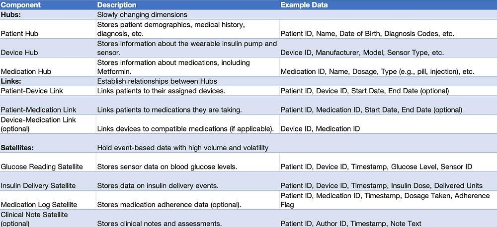

2.1 Data Sources and Event Streams:
Mobile/Wearable App Data:
Continuous glucose readings (CGM data).
Insulin delivery events (dosage, timing).
User input (food logs, activity levels, symptoms).
App usage data (logins, settings changes).
Device Data:
Device status and battery levels.
Calibration and maintenance logs.
Error and warning messages.
Healthcare Professional Data:
Patient assessments, diagnoses, and medication adjustments.
Consultations and communication logs.
2.2 Event Streaming Architecture:
Consider a real-time event streaming platform like Apache Kafka to capture and process data streams from various sources.
Employ microservices architecture to decouple data ingestion, processing, and storage components.
Implement data validation and transformation steps within the streaming pipeline.
2.3 Data Vault 2.0 Modeling:
Raw Data Vault (RDV):
Land all incoming event streams in the RDV in a semi-structured format (e.g., JSON).
Preserve original data integrity and facilitate historical analysis.
Business Vault (BV):
Define Hubs for entities like Patients, Devices, Healthcare Professionals.
Establish Links to capture relationships between Hubs (e.g., Patient-Device, Doctor-Patient).
Create Satellites for detailed event data, grouped by entity (e.g., Patient_GlucoseReadings, Device_ErrorLogs).
Utilize surrogate keys to ensure data integrity and efficient querying.
Data Marts:
Develop specific data marts tailored for different analytics use cases (e.g., clinical analysis, patient adherence monitoring).
Aggregate and pre-aggregate relevant data from the BV for faster querying and reporting.
2.4 Data Quality and Governance:
Implement data quality checks within the streaming pipeline to identify and address data anomalies.
Define clear data governance policies for data access, security, and retention.
2.5 Benefits of Data Vault 2.0:
Enables flexible data integration from diverse sources.
Supports historical analysis and trend identification.
Provides a scalable and future-proof data architecture.
Facilitates self-service analytics for various stakeholders.
Tech TL;DR
Here’s a breakdown of how events from wearable insulin apps can be streamed and processed using a Kinesis/Snowflake model:
1. Data Streaming and Snowflake Design: Streaming Platform (Choose one):
Approach 1 —
a) Apache Kafka:
b) Amazon Kinesis Streams:
b) Snowflake Design:
Streams:
Pipes:
Loading into Tables:
Approach 2 —
1. Data Flow:
Mobile/Wearable Apps: Capture sensor data (insulin levels, glucose readings, device status) and send events to Kinesis Firehose.
Kinesis Firehose: Delivers data streams to Snowflake in real-time or batch mode.
Snowflake: Stores, processes, and analyzes the data for various purposes.
2. Sample Code (Producer — Python):
3. Sample Code (Consumer — Python):
Data Modeling and Schema for Healthcare Data (Data Vault 2.0)
Data Flow:
Real-time data (glucose readings, insulin delivery) streams from the wearable pump to Kinesis.
Kinesis delivers data to Snowflake loading staging tables.
Data from staging tables is transformed and loaded into Hubs, Links, and Satellites based on Data Vault 2.0 principles.
Data is available for analysis and reporting in Snowflake.
Example Scenario:
A patient with diabetes (DiagnosedDate in Patient_Diagnoses) is currently taking Metformin (TreatmentID in Patient_Treatments).
Their doctor (DoctorID in Patient_Doctor) decides to switch them to wearable insulin treatment (new TreatmentID in Patient_Treatments).
The new treatment is administered at a hospital (FacilityID in Treatment_Facility).
A payment is made for the treatment (PaymentID in Payment_Service).
Additional Considerations:
Surrogate Keys: Use surrogate keys for all Hubs and Links to optimize performance and avoid exposing sensitive data like patient identifiers.
Normalization: Normalize Satellite data to reduce redundancy and improve query efficiency.
Data Types: Choose appropriate data types for each field based on the expected values.
Partitioning: Partition tables by date or patient ID for efficient data management and querying.
External Data Integration: Consider linking to external data sources like lab results or claims data for a more holistic view.
Tools and Technologies:
Data Ingestion: Use tools like AWS Kinesis Firehose or Snowflake Data Cloud to ingest data from various sources.
Data Transformation: Use tools like AWS Lambda or Snowflake User Defined Functions (UDFs) to transform and enrich data before loading.
Data Modeling and Management: Use Snowflake’s schema management capabilities to define and maintain the Data Vault 2.0 model.
Next Steps:
In part 3, I will explore the analytics and exploratory data analysis (EDA) techniques that can be applied to the modeled data to gain insights into the transition process and improve patient outcomes.